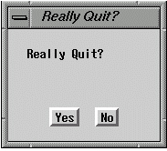

Operating Documentation
Direction 5133315-3, Rev# 14
Signa EXCITE HD 1.5T Service Methods
Module Version 1.0, Version Date 4/27/07
Operating Documentation |
Enter descriptive content here.
When you’re finished editing values, click the [Quit] button to exit the application.
2. At the prompt “Really Quit?”, click [Yes]. See Illustration 1.
Illustration 1: QUIT DIALOG BOX

Next, a Save dialog box appears for each configuration file that has changed. For example, the following message will appear: “Coil Config File has been changed.” To save changes, click the [Save] button. To discard any changes you’ve made, click the [Do Not Save] button.
4. To apply changes made in the config files, shut down the Signa software and reboot the computer.
| NOTE: | To shut down the software, on the Service Desktop Manager, click on [System Shutdown]. |
Information of components of Configuration File Manager are accessed in .
Table 1: Configuration File Manager Links